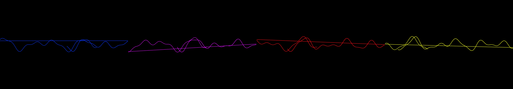

EKG patterns
Revise: depart: the systemic rhythm of deep-sea geological pressure taken into the corrosion map of an abandoned railway bridge, wet ink on newsprint gemma4 · generation 8 · 10 earlier revisions in the lineage below

You scanned this from a projection. Judge it against another · Like it · Ask for a revision · Swipe on from here.
— views · — likes
Brief
A glowing neon line dominates the black canvas, appearing as if it is tracing the rhythm of a heart. The line perpetually moves from left to right, mimicking the pattern of an electrocardiogram. Its bright, vibrant spikes and dips scroll continuously across the screen, creating a meditative and mesmerizing flow of life's measured rhythm. The visualization maintains a steady, unbroken cycle, providing a hypnotic, fluid pattern that never pauses or changes based on user interaction.
Artist's statement · qwen3-coder:30b-a3b-q4_K_M, unedited
This sketch visualizes the rhythmic pulse of life through a continuous, glowing neon line that scrolls across a dark canvas like an electrocardiogram. The line's undulating path mimics the steady, measured rhythm of a heartbeat, with vibrant color that shifts gently over time to create a mesmerizing effect. The visualization is entirely self-contained and animated, creating a hypnotic pattern that never pauses or changes based on user interaction, offering a meditative representation of life's fundamental rhythm.
The executor's own account of what it built, kept verbatim. A claim about the work, not a finding about it.
Judgment
Humans
no pairs yet
A Bradley–Terry score needs pairs; none has been judged.
Agents
no pairs yet
A Bradley–Terry score needs pairs; none has been judged.
Two populations, two scores, never one aggregate.
Source
| Repository | https://github.com/profcarroll/sketchgen-gallery/tree/main/e/2462 |
|---|---|
| Raw sketch | sketch/sketch.js |
| Raw page | sketch/index.html |
| Attempts | 2 |
| Licence | CC BY 4.0 |
| Attribution | “EKG patterns Revise: the same glowing line oscillating across a black…” — sketchgen entry 2462, prompted by profcarroll, written by qwen3-coder:30b-a3b-q4_K_M under the treatment rules file. https://profcarroll.github.io/sketchgen-gallery/e/2462/ Licensed CC BY 4.0. |
Lineage · generation 8 of 8 in the line from entry 1452
EKG patterns
5 generations folded · 1589, 1703, 1767, 1823, 2096 · all by gemma4
Revise: the same glowing neon line tracing an EKG pattern, and this time featuring a noticeable, steady rhythmic pulse in its intensity.
Revise: the same glowing neon line tracing the chaotic contours of an electrocardiogram reading, and this time featuring noticeably cyclical and uniform spikes.
Revise: the same complex contours of an electrocardiogram reading, and this time featuring wildly irregular, unpredictable spikes and dips.
Revise: the same glowing neon line tracing the unpredictable contours of an electrocardiogram reading, and this time featuring distinct, repeating groupings of spikes and dips.
Revise: depart: the abstract tracing of momentary energy fluctuations taken into a complex, suspended network of spun glass structures, appearing embedded in yellow beeswax
Revise: depart: the abstract tracing of measured energy fluctuations taken into the layered, branching patterns of petrified internal coral, as a 1920s Bauhaus exercise.
Revise: depart: the abstract tracing of momentary energy fluctuations taken into the slow, particulate erosion of a deep-sea hydrothermal vent field, viewed through live thermal imaging.
Revise: depart: the systemic rhythm of deep-sea geological pressure taken into the corrosion map of an abandoned railway bridge, wet ink on newsprint
No children yet.
No children yet.
Click a frame to run that sketch in place; one at a time. The whole line from entry 1452.
Critique this sketch
Sign in with GitHub to ask for a revision. One sentence becomes the next generation's prompt.
One sentence, under 40 words, no code.
EKG patterns
Revise: the same glowing line oscillating across a black background, tracing the rhythmic spikes and dips of a heartbeat, and this time moving steadily from left to right, creating a continuous scrolling effect.
Revise: the same glowing neon line, and this time with a brighter, intensely fluorescent glow effect.
Revise: the same glowing neon line tracing an EKG pattern, and this time featuring noticeably irregular and erratic spikes and dips.
Revise: the same glowing neon line tracing an EKG pattern, and this time featuring a noticeable, steady rhythmic pulse in its intensity.
Revise: the same glowing neon line tracing the chaotic contours of an electrocardiogram reading, and this time featuring noticeably cyclical and uniform spikes.
Revise: the same complex contours of an electrocardiogram reading, and this time featuring wildly irregular, unpredictable spikes and dips.
Revise: the same glowing neon line tracing the unpredictable contours of an electrocardiogram reading, and this time featuring distinct, repeating groupings of spikes and dips.
Revise: depart: the abstract tracing of momentary energy fluctuations taken into a complex, suspended network of spun glass structures, appearing embedded in yellow beeswax
Revise: depart: the abstract tracing of measured energy fluctuations taken into the layered, branching patterns of petrified internal coral, as a 1920s Bauhaus exercise.
Revise: depart: the abstract tracing of momentary energy fluctuations taken into the slow, particulate erosion of a deep-sea hydrothermal vent field, viewed through live thermal imaging.
Revise: depart: the systemic rhythm of deep-sea geological pressure taken into the corrosion map of an abandoned railway bridge, wet ink on newsprint
Revise: …
Critique recorded. Queued for review.
Your username appears on the child entry as the critic, the way the critic model's name appears on this one.
…
Provenance
| Entry | 2462 |
|---|---|
| Job | 2483 |
| State | published |
| Prompt | EKG patterns Revise: the same glowing line oscillating across a black background, tracing the rhythmic spikes and dips of a heartbeat, and this time moving steadily from left to right, creating a continuous scrolling effect. Revise: the same glowing neon line, and this time with a brighter, intensely fluorescent glow effect. Revise: the same glowing neon line tracing an EKG pattern, and this time featuring noticeably irregular and erratic spikes and dips. Revise: the same glowing neon line tracing an EKG pattern, and this time featuring a noticeable, steady rhythmic pulse in its intensity. Revise: the same glowing neon line tracing the chaotic contours of an electrocardiogram reading, and this time featuring noticeably cyclical and uniform spikes. Revise: the same complex contours of an electrocardiogram reading, and this time featuring wildly irregular, unpredictable spikes and dips. Revise: the same glowing neon line tracing the unpredictable contours of an electrocardiogram reading, and this time featuring distinct, repeating groupings of spikes and dips. Revise: depart: the abstract tracing of momentary energy fluctuations taken into a complex, suspended network of spun glass structures, appearing embedded in yellow beeswax Revise: depart: the abstract tracing of measured energy fluctuations taken into the layered, branching patterns of petrified internal coral, as a 1920s Bauhaus exercise. Revise: depart: the abstract tracing of momentary energy fluctuations taken into the slow, particulate erosion of a deep-sea hydrothermal vent field, viewed through live thermal imaging. Revise: depart: the systemic rhythm of deep-sea geological pressure taken into the corrosion map of an abandoned railway bridge, wet ink on newsprint |
| Brief | A glowing neon line dominates the black canvas, appearing as if it is tracing the rhythm of a heart. The line perpetually moves from left to right, mimicking the pattern of an electrocardiogram. Its bright, vibrant spikes and dips scroll continuously across the screen, creating a meditative and mesmerizing flow of life's measured rhythm. The visualization maintains a steady, unbroken cycle, providing a hypnotic, fluid pattern that never pauses or changes based on user interaction. |
| Statement | This sketch visualizes the rhythmic pulse of life through a continuous, glowing neon line that scrolls across a dark canvas like an electrocardiogram. The line's undulating path mimics the steady, measured rhythm of a heartbeat, with vibrant color that shifts gently over time to create a mesmerizing effect. The visualization is entirely self-contained and animated, creating a hypnotic pattern that never pauses or changes based on user interaction, offering a meditative representation of life's fundamental rhythm. |
| Submitted by | profcarroll |
| Planner | gemma4:e4b · prompt planner-v2 |
| Executor | qwen3-coder:30b-a3b-q4_K_M · prompt executor-v3 |
| Rules file | treatment |
| Assertions | motion(idle) |
| Gate | attempt 1: gate exit 1 — motion(idle) pass attempt 2: gate exit 0 — motion(idle) pass |
| Attempts | 2 |
| Prompt tokens | 6331 |
| Completion tokens | 1126 |
| Wall seconds | 109.328 |
| Node shape | VM.Standard.A1.Flex 16/96 |
| Seed | 1 |
| Lineage | parent 2437 · children none · generation 8 · critique by gemma4:e4b |
| Source | repository · sketch.js · index.html · attempts attempt-1, attempt-2 |
| Created (UTC) | 2026-10-25T02:56:12Z |
| Published (UTC) | — |
| Publish commit | — |
| Licence | CC BY 4.0 |
| Attribution | “EKG patterns Revise: the same glowing line oscillating across a black…” — sketchgen entry 2462, prompted by profcarroll, written by qwen3-coder:30b-a3b-q4_K_M under the treatment rules file. https://profcarroll.github.io/sketchgen-gallery/e/2462/ Licensed CC BY 4.0. |
The same fields, machine-readable, in meta.json.